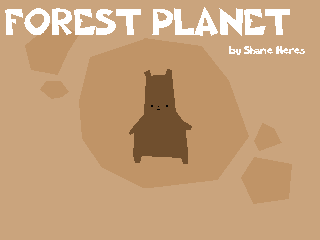
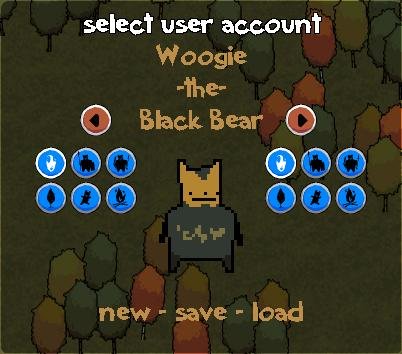
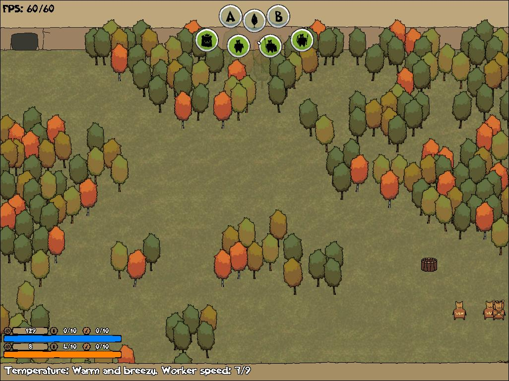
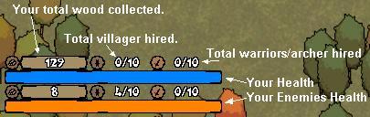

The Help File: All you'll need to know to play Forest Planet.
enalpria.uni.cc - enalpria.cloud9nine.net
-QUICK INFO-
The
object of the game is to destroy your enemies CAVE. You do this by
sending enough SOLDIERS or LEADERS into it to do damage. You will never
have enough WOOD to buy SOLDIERS and LEADERS unless you have enough
workers working on gathering wood.
But now with the planet drifting into cold space it will get colder for
the WORKERS and they will work slower which translates into less WOOD
to build WARRIORS. You will see ice building up on the floor which will
make it harder for your WORKERS to walk quickly on. You will have to
build BONFIRES to get rid of the ice. BONFIRES not only warm up the
ice, making it quicker to walk around, they also speed up WORKERS when
there is no ice. So more bonfires = more wood = more soldiers.
Aside from destroying the cave your SOLDIERS will also kill almost any
unit he comes by. WORKERS, other SOLDIERS, and ARCHERS. He will die
when he attacks another SOLDIER, but so will they other SOLDIER. He can
not kill leaders. No on can.
ARCHERS will follow the ARCHER code which states you can never shoot
another ARCHER whether he is any enemy or not. ARCHERS will shoot up to
3 units and then they will retreat. But if you build them a BUNKER they
will have a better supply of arrows and they will feel safer to
keep fighting. In a BUNKER an ARCHER will kill 10 units.
-CREATING A CHARACTER-
On the main menu click on select
you will see this menu on the right side of the screen

Type with the keyboard to name your character.
The two brown arrow buttons will select your bears breed.
The blue buttons on the left and right of your character are the power ups.
Move your mouse over a power up to see what it does.
Using two of the same power ups will make them more powerful.
Click on new to reset the character (if you did not save him this will delete him).
Click on save to save your character for later quick loading.
Click on load to be shown a box where you can see characters you have saved. (Dont load Bears.ini)
To be honest there is not much point to naming your character or saving and loading him/her.
I did not finish adding in features that would use this.
-STARTING A GAME-
When you are done building a character you can click START.
You will be shown a difficulty selection screen.
Move your mouse over a box to see the difficulty.
Select the one you want to try and click the start button at the button of the boxes.
Note: The bear in the difficulty box is the breed you will be fighting against.
Easy = Panda Bear
Medium = Koala
Hard = Brown Bear
FOUROCIOUS!! = Black Bear
-PLAYING A GAME-
When the game starts here are some of the things you will be seeing.

FPS: 60/60 = Frames per second. If this is below 60 the game is lagging. My fault. :O
3 gray/brown buttons. A, Tree, & B: These buttons are set points. You can click a button and click a set point somewhere on the map.
4 green buttons. Hero, Worker, Soldier, Archer: Clicking on these buttons will bring up mini menus.
-Hero mini menu:
---Attack: This will create a Hero (for $200) unit who will go use the power ups you set for him on the SELECT screen.
-Worker mini menu:
---Chop: Clicking this will create a Worker (for $10) who will chop the nearest tree and return with 15$.
---Tree Image: Clicking this will create a Worker (for $10) who will chop the nearest tree at the Tree set point. But only if you have set a Tree set point.
---Bunker: Clicking this will put and bunker at your mouse cursor. Place the bunker by clicking somewhere on the map. A Worker will go and build it for $100.
---Bonfire:
A bonfire will keep your units moving faster. This is very useful in
the winter time when the units are getting sluggish. Click this button
and then click on the map to place the bonfire for $100. A Worker will go and build it.
-Soldier mini menu:
---Attack: This will create a Soldier
(for $50) who will run towards the enemies base killing up to 5 units
the he comes by. When he kills 5 units he will go back home. If he does
not kill five units he will attack the enemies cave.
---A: This will create a Soldier (for $50) who will move to set point A. But only if it is created. This is usefuly in more difficult maps to move units arround obstacles.
---B: Exactly like A except the Soldier will move to point B.
-Archer mini menu:
---Attack: This will create an Archer (for $55) who will move towards the enemies cave and shoot up to three units. He will then retreat.
---A: Same as Soldier A set point.
---B: Same as Soldier B set point.
---Defend: If a Worker has built a Bunker and that bunker is empty you can click this to hire an Archer (for $55) who will go and defend that bunker. When he has killed 10 units he will retreat to the cave.
Notes on units:
All units will only do one job and
then return to the base. So if a villager chops down a tree and returns
to base he will not come back out and chop another tree. You will have
to hire another villager.
Health and Stat bars: In the bottom right corner you will see some bars and stats. The following image describes their uses.

Temperature and Worker Speed:
This is the temperature in the lands and how it will relate to you
workers speed if they are too cold. To keep them warm just build
bonfires where they will be walking.
The rest you should be able to figure out for yourself. But if you do have any problems, just post them enalpria.uni.cc.
And thank you for playing.